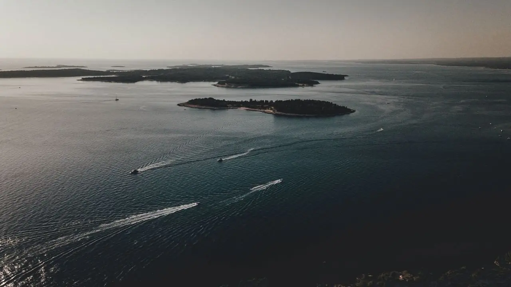

Półwysep
Istria to półwysep w kształcie serca w północnej części Adriatyku, z długą linią brzegową, starymi kamiennymi miasteczkami na wzgórzach, gajami oliwnymi i winnicami. Pula leży na południowym krańcu, dzięki czemu jest dobrą bazą: morze jest blisko, lotnisko również, a większość regionu znajduje się w zasięgu jednodniowej wycieczki.

Jak dojechać
Pula ma własne lotnisko, około 10–15 minut jazdy samochodem od większości miejsc, które oferujemy. Wielu gości przyjeżdża autem, a drogi są dobre. Orientacyjne odległości drogowe do Puli:
| Skąd | Odległość | Samochodem |
|---|---|---|
| Triest | około 110 km | około 1,5 godziny |
| Lublana | około 180 km | około 2,5 godziny |
| Zagrzeb | około 270 km | około 3 godzin |
| Wenecja | około 280 km | około 3,5 godziny |
| Wiedeń | około 570 km | około 6 godzin |
| Monachium | około 580 km | około 6 godzin |
| Budapeszt | około 620 km | około 6,5 godziny |
Kiedy przyjechać
Sezon trwa od maja do października. Lipiec i sierpień to najgorętsze i najbardziej zatłoczone miesiące, idealne dla miłośników plażowania. W czerwcu i wrześniu morze jest ciepłe, a tłumy mniejsze. To nasze ulubione miesiące na rejsy.
Co zjeść i wypić
Kuchnia istryjska łączy smaki morza i wzgórz. Na wybrzeżu warto szukać świeżych ryb i kalmarów, w głębi lądu makaronu fuži z truflami lub dziczyzną, lokalnej oliwy oraz białego wina Malvazija. Dobrze jest zapytać gospodarza, gdzie jadają miejscowi, i pamiętać, że najlepsze potrawy bywają najprostsze.
Miasta i miejsca do zobaczenia
- Pula: rzymska Arena, Świątynia Augusta i stare miasto, wszystko w zasięgu spaceru od nabrzeża Riva.
- Rovinj: kolorowe stare miasto na małym półwyspie, do którego łatwo dotrzeć rejsem statkiem.
- Poreč: Bazylika Eufrazjańska z mozaikami.
- Motovun i miasteczka na wzgórzach: kamienne wioski ponad winnicami, idealne na niespieszną wycieczkę samochodem.
- Przylądek Kamenjak: dzikie zatoczki i skaliste brzegi na południowym krańcu.
Wybrzeże widziane z łodzi
Z wody wybrzeże wygląda inaczej: klify, jaskinie i małe plaże, do których nie dociera żadna droga. Nasz przewodnik po rejsach pomoże wybrać między rejsem dziennym, rejsem o zachodzie słońca a wycieczką całodniową.
Przed wyjazdem
Przed podróżą prosimy sprawdzić zasady wjazdu obowiązujące obywateli Państwa kraju oraz aktualne informacje dla podróżnych publikowane przez rząd Państwa kraju.